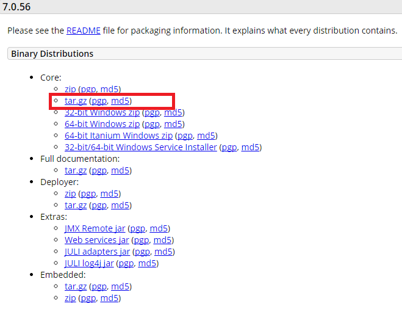

TOMCAT 설치 방법에 대해 간단히 살펴보도록 한다. TOMCAT 7 제품을 설치한다.
TOMCAT을 설치하기 전에 반드시 JDK(Java Development Kit) 또는 JRE(Java Runtime Environment) 가 설치되어 있어야 한다.
TOMCAT 다운로드
http://tomcat.apache.org/download-70.cgi 사이트에 방문하여 최근 release된 TOMCAT 바이너리 파일을 다운받는다.( apache-tomcat-7.0.56.tar.gz)

TOMCAT 설치
다운로드 한 압축 파일을 FTP로 옮긴다.(tomcat 설치 계정)
업로드 한 압축 파일을 적절한 디렉토리에 푼다.(tar xvzf apache-tomcat-7.0.56.tar.gz)
Binary이기 때문에 압축을 푸는 것으로 설치는 끝난다.
[tomcat@dev ~]$ tar xvzf apache-tomcat-7.0.56.tar.gz apache-tomcat-7.0.56/bin/catalina.sh apache-tomcat-7.0.56/bin/configtest.sh apache-tomcat-7.0.56/bin/daemon.sh apache-tomcat-7.0.56/bin/digest.sh apache-tomcat-7.0.56/bin/setclasspath.sh apache-tomcat-7.0.56/bin/shutdown.sh apache-tomcat-7.0.56/bin/startup.sh apache-tomcat-7.0.56/bin/tool-wrapper.sh apache-tomcat-7.0.56/bin/version.sh apache-tomcat-7.0.56/conf/ . . . apache-tomcat-7.0.56/webapps/manager/images/tomcat.gif apache-tomcat-7.0.56/webapps/manager/images/update.gif apache-tomcat-7.0.56/webapps/manager/images/void.gif apache-tomcat-7.0.56/webapps/manager/index.jsp apache-tomcat-7.0.56/webapps/manager/status.xsd apache-tomcat-7.0.56/webapps/manager/xform.xsl [tomcat@dev ~]$ mv apache-tomcat-7.0.56 /app/was/tomcat7
<tomcat 설치 예>
환경변수 설정
다음의 환경변수를 설정한다.
1. CATALINA_HOME : TOMCAT을 설치한 디렉토리를 지정한다.
2. JAVA_HOME 혹은 JRE_HOME : JDK 혹은 JRE가 설치된 디렉토리를 지정한다.
3. PATH : $CATALINA_HOME/bin 디렉토리(1번에 설정한 TOMCAT설치디렉토리 하위의 bin디렉토리의 경로)를 PATH에 추가한다.
[tomcat@dev ~]$ vi .bash_profile export CATALINA_HOME=/app/was/tomcat7 export JAVA_HOME=/app/java/jdk1.6 export PATH=$CATALINA_HOME/bin:$JAVA_HOME/bin:$PATH [tomcat@dev ~]$ . .bash_profile
<linux 환경설정 예>
TOMCAT 구동
다음의 명령어를 수행하여 TOMCAT을 구동시킨다.
$ catalina.sh start (windows : catalina start) [tomcat@dev ~]$ catalina.sh start Using CATALINA_BASE: /app/was/tomcat7 Using CATALINA_HOME: /app/was/tomcat7 Using CATALINA_TMPDIR: /app/was/tomcat7/temp Using JRE_HOME: /app/java/jdk1.6 Using CLASSPATH: /app/was/tomcat7/bin/bootstrap.jar:/app/was/tomcat7/bin/tomcat-juli.jar Tomcat started. [tomcat@dev ~]$
TOMCAT 종료
다음의 명령어를 수행하여 TOMCAT을 종료시킨다.
$ catalina.sh stop (windows : catalina stop) [tomcat@dev ~]$ catalina.sh stop Using CATALINA_BASE: /app/was/tomcat7 Using CATALINA_HOME: /app/was/tomcat7 Using CATALINA_TMPDIR: /app/was/tomcat7/temp Using JRE_HOME: /app/java/jdk1.6 Using CLASSPATH: /app/was/tomcat7/bin/bootstrap.jar:/app/was/tomcat7/bin/tomcat-juli.jar [tomcat@dev ~]$
{kind=link}
{kind=link}